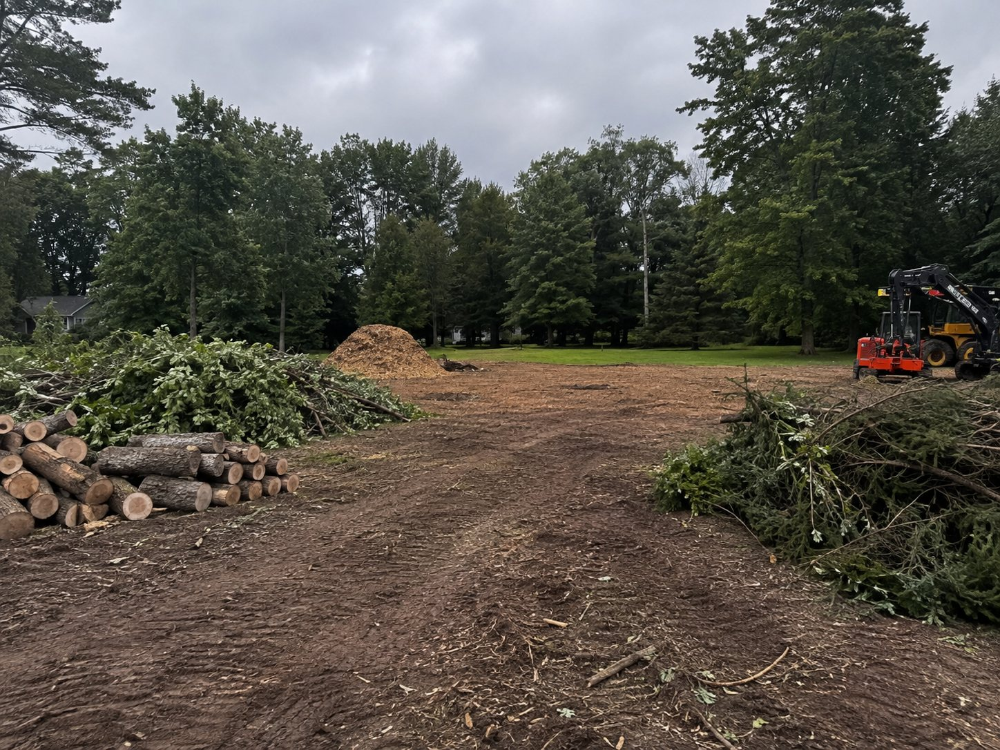
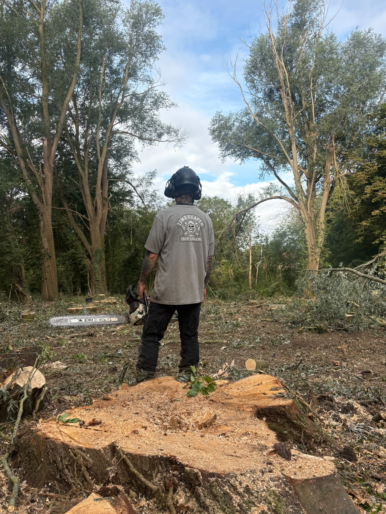
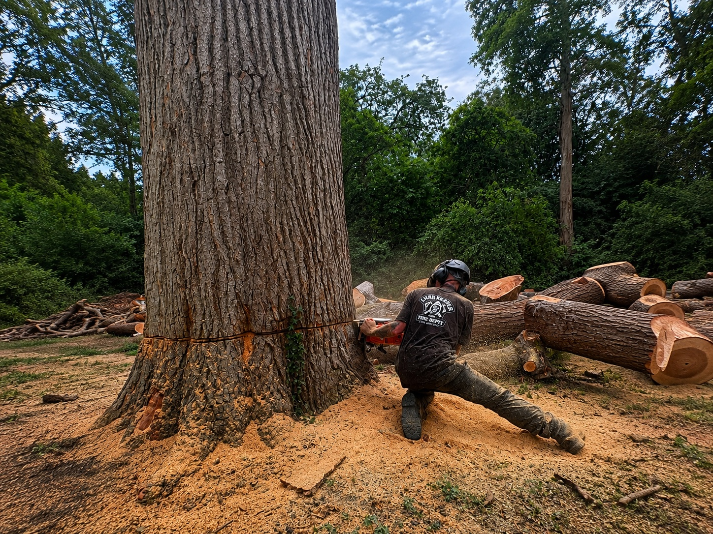

Site
Clearance.
Clearing overgrown land, scrub and multiple trees ahead of building work, landscaping, or just reclaiming a neglected garden. Fully insured, and carried out to British Standard BS3998.
The whole plot,
not just one tree
Site clearance is bigger-picture work — clearing multiple trees, scrub, brambles and overgrown vegetation from a whole plot, rather than dealing with a single tree in isolation. It's the job we're called in for ahead of building work, a landscaping project, or when a garden or piece of land has simply been left to go wild for years.
We bring the right equipment for the scale of the job — chippers, and where needed, machinery to move larger material — so a plot that would take weeks to clear by hand can usually be turned around in days.
Every clearance starts with a free site visit, so we can check what's actually there, flag anything protected that needs council permission first, and give you a clear plan before anything's cut.

Why people
call us in
A few of the most common reasons a site needs clearing as a whole.
Building & Development
Land needs to be cleared and ready before an extension, new build or groundworks can begin.
Landscaping Projects
A blank canvas is needed before new planting, a lawn, a patio or a garden redesign can go in.
Reclaiming Neglected Land
Years of unmanaged growth turned into something usable again — a garden, paddock or plot brought back under control.

What to expect
from a clearance
Larger jobs work a bit differently to a single tree visit — here's what's involved:
-
A free site visit first, to assess scope, access and timeframe
-
Any protected trees or TPOs checked and confirmed before work starts
-
The right equipment brought for the scale of the site
-
A clear plan agreed for timber, chippings and waste before we begin
-
Site left level, swept and ready for whatever comes next
From first call
to cleared site
Four steps, every time — no surprises on the day and no mess left behind.
Get in touch
Call, message, or send us a few photos. Tell us what's going on and where you're based.
Free site visit
We come out to assess the tree, access and any council permissions needed, then send a clear, written quote.
The work
Our NPTC-qualified climbers carry out the job safely, with the right rigging and site protection throughout.
Clear & tidy
Site swept, logs or chippings dealt with as agreed, and all waste disposed of responsibly.
Site clearance,
questions answered
The things people usually want to know before booking a clearance.
What counts as site clearance rather than tree felling?
Felling is about removing one tree. Site clearance is about the whole plot — multiple trees, scrub, brambles and overgrown vegetation cleared together, usually because the land's being prepared for building, landscaping, or simply reclaimed after years of neglect.
Do you clear land ahead of building work?
Yes — site clearance ahead of development is one of our most common bigger jobs. We can work alongside your builder or developer's timeline, and flag anything that might need council permission before work starts.
What happens to everything that's cleared?
On a job this size, we typically chip smaller material on site and remove or stack larger timber, depending on what you'd like done with it. We'll agree the plan for waste and green material before work starts, so there are no surprises.
How long does a site clearance take?
It depends entirely on the size of the plot and how overgrown it is — anywhere from a day for a large garden to several days for a bigger site. We'll give you a realistic timeframe once we've seen it.
Do I need permission to clear a site?
Possibly, if any of the trees involved are protected by a Tree Preservation Order (TPO) or sit within a conservation area. We check this as part of the free site visit — clearing protected trees without permission can carry serious penalties, so it's always worth confirming first.
Can you clear a site that's badly overgrown?
Yes — years of neglected growth, brambles and self-seeded trees are exactly what site clearance is for. However bad it looks, it's rarely a problem we haven't dealt with before.
Often needed
alongside clearance
Tree Felling & Removal
For a single significant tree on the plot that needs individual, careful removal rather than clearance.
Learn moreStump Grinding
Once a site's cleared, grinding out the leftover stumps gets the ground properly ready to build or plant on.
Learn moreHedge Cutting
Overgrown hedges often form part of a wider clearance. We can reduce, reshape or restore them while the rest of the site is reclaimed.
Learn more